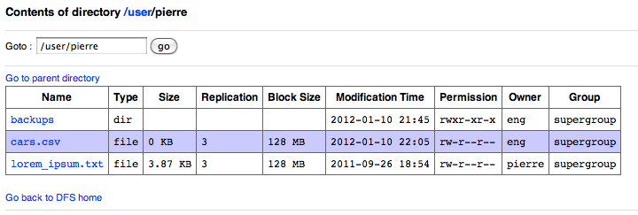
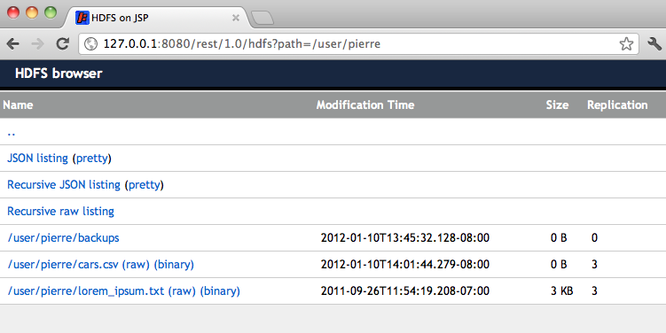

Overview
The Action core exposes HDFS over HTTP by providing a REST interface as well as a browsing UI. Unlike the browser shipped natively with the Hadoop namenode, it integrates a de-serialization mechanism to read files content (e.g. Thrift files can be seen as CSV for instance).
At Ning, the Action core is the main interface to Hadoop: it gives us a standardized interface to HDFS and allows us to interact with multiple clusters, often running different versions of HDFS, without our application being aware of it.
Here is how's my user directory look like using the native Hadoop browser:
- 
The same directory, using the Action core:
- 
At its core, the Action core is a web application. You can run it in Jetty or Tomcat for instance.
Getting started
war are published to Maven Central.
To get started, you can clone the Github tree and start the Action core locally:
mvn -Daction.hadoop.namenode.url=hdfs://namenode.mycompany.com:9000 jetty:run
You can now browse HDFS:
http://127.0.0.1:8080/rest/1.0/hdfs?path=/
Note Available configuration options can be found here.
API
REST endpoints
- GET /rest/1.0/hdfs
- Used by the jsp UI
- GET /rest/1.0/json
- Output data as json (json streaming endpoint)
- GET /rest/1.0/text
- Output data as csv
- GET /rest/1.0/binary
- Output data as-is, no deserialization
- POST /rest/1.0
- Upload a file
- DELETE /rest/1.0
- Delete a path
Common query parameters
- path
- Path to open in HDFS
- range
- When opening a file, bucket of lines to display (e.g. range=1-50 for the first 51 lines)
- raw
- Whether to display the nice, HTML version (raw=true) or plain text (raw=false)
- recursive
- Whether to craw a directory recursively
For instance, if you want to download all content under /user/pierre:
curl 'http://127.0.0.1:8080/rest/1.0/hdfs?path=/user/pierre&recursive=true&raw=true'
POST specific parameters
- overwrite
- Overwrite the path if it exists already (default false)
- replication
- Replication factor to use (default 3)
- blocksize
- Blocksize to use (use Hadoop default otherwise)
- permission
- File permission to set, either in octal or symbolic format (default u=rw,go=r)
Custom deserializers
The Action core will parse a file into a list of com.ning.metrics.action.hdfs.data.Row. Intuitively, the Action core tries to represent any type of data like a csv file (the Row being the abstraction of a line in a csv file)
By default, it knows how to convert a line in a file (or an object in a Sequence file) to Rows for various serialization types: plain text, Thrift, Smile, ... See the serializers in com.ning.metrics.action.hdfs.data.parser. You can also implement your own serializers by implementing com.ning.metrics.action.hdfs.data.parser.RowSerializer. The main method to implement is:
toRows(Registrar r, Object value)
value is either a Sequence file value when deserializing sequence files or an InputStream for plain text files and other raw binary data. r is metadata information regarding the object, if integration with Goodwill is enabled. To use your new serializer, specify it on the command line, e.g.:
-Daction.hadoop.io.row.serializations=com.company.UberSecretRowSerializer\,com.company.VeryUberSecretRowSerializer
You can also specify your custom Hadoop I/O serialization classes (which implement org.apache.hadoop.io.serializer.Serialization) on the command line:
-Daction.hadoop.io.serializations=com.company.HadoopSecretSerialization